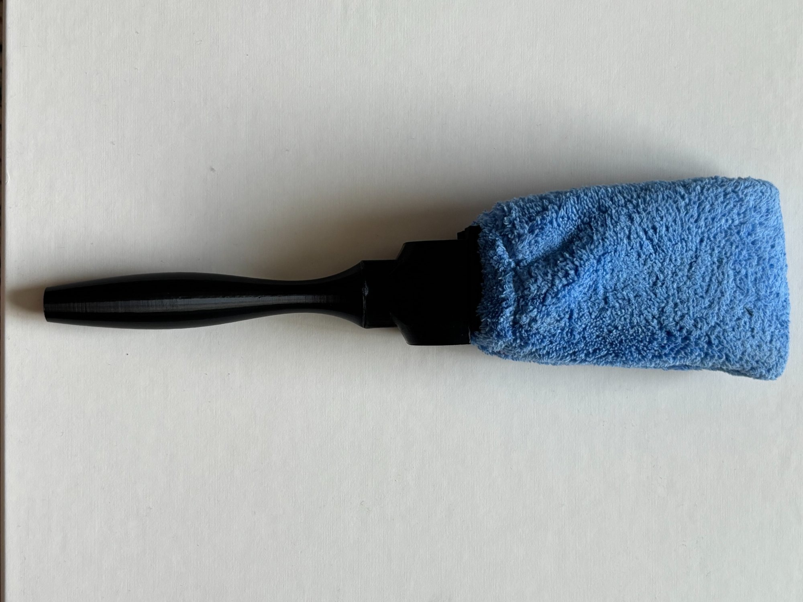
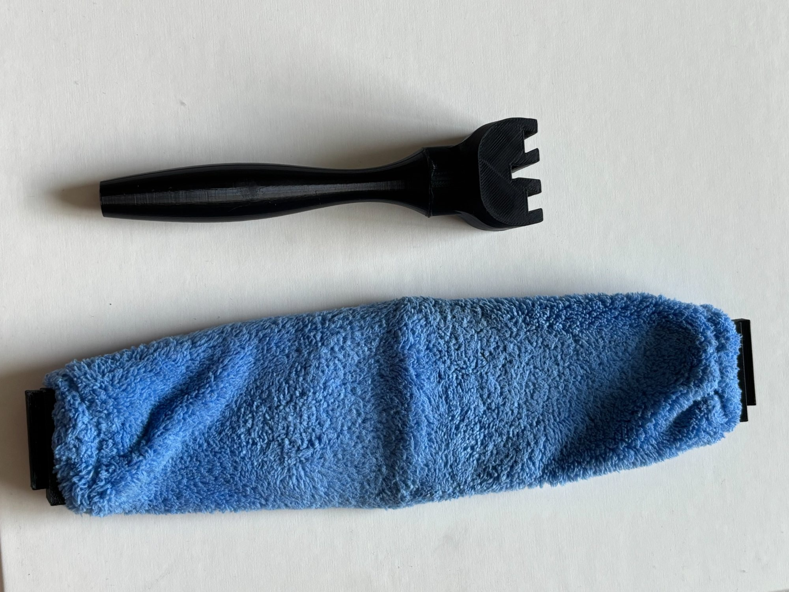

PaintMate Paintbrush Adapter
Personal design project extending a reusable microfiber painting sleeve to support detail brushwork.

Fig. 1 — Three main components: the PaintMate reusable sleeve, the paintbrush handle, and the silicone adapter belt.

Fig. 2 — Fully assembled prototype.

Fig. 3 — Belt inserted in PaintMate sleeve.
Objectives
- The PaintMate was originally designed to replace paint rollers, but was incapable of detail work.
- Extend the usefulness of the reusable painting sleeve by enabling brushwork and fine detail painting.
Outcomes & Contributions
- Designed a rigid, foldable silicone belt with a clip-on handle.
- Refined through multiple 3D-printed prototypes to a final working design.
Technical Details
- Concept sketching, SolidWorks CAD, and iterative FDM prototyping.
- Balanced rigidity for brushstroke control with sleeve flexibility for ease of use.